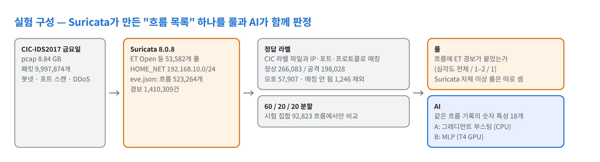
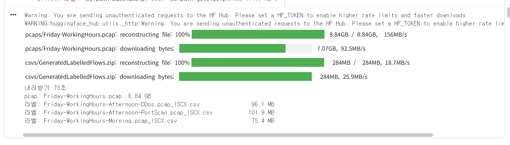
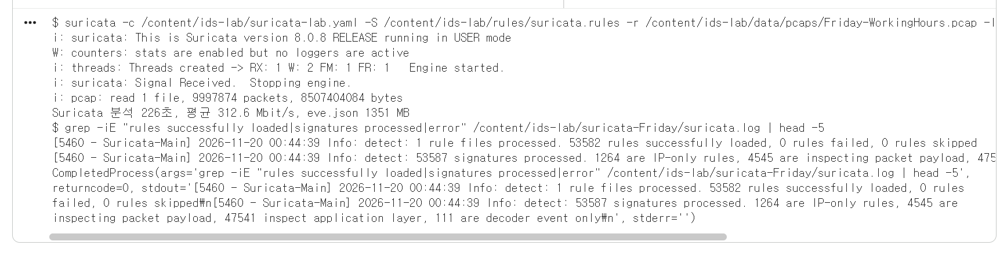
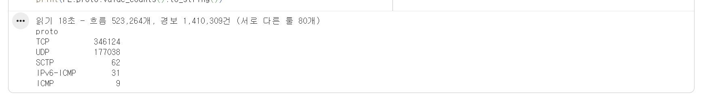
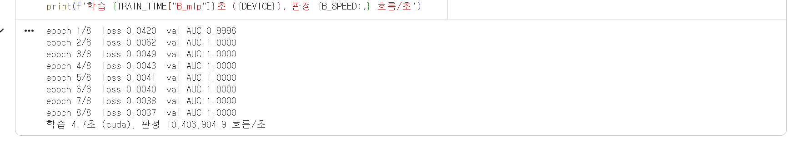
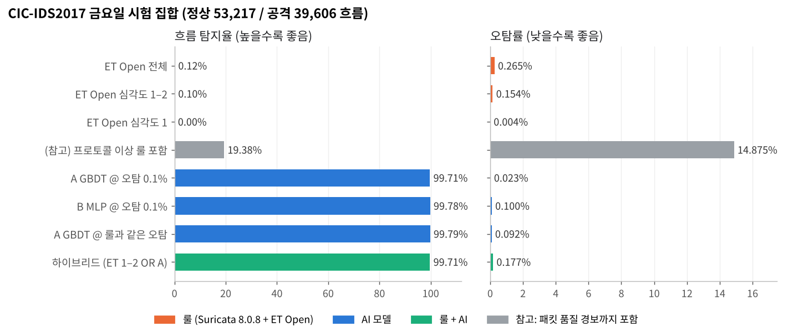
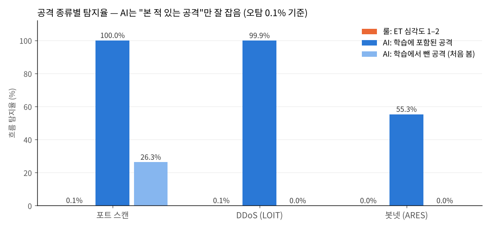

개인 프로젝트 · 룰 기반 vs AI 탐지 비교 2단계
IPS — Suricata + ET Open vs AI
개인 프로젝트Colab 실행 완료
공개 침입 탐지 데이터셋 CIC-IDS2017의 금요일 원본 패킷(8.84 GB)을 실제 IPS 엔진인 Suricata 8.0.8 + Emerging Threats Open 룰로 재생하고, Suricata가 만든 같은 흐름(연결) 목록을 AI 모델 2개에도 넣어 탐지율과 오탐률을 비교했습니다.
1단계 WAF보다 차이가 더 극단적이었습니다. ET Open 룰은 이날의 포트 스캔·DDoS·봇넷 흐름을 거의 잡지 못했고, AI는 99.7%를 잡았습니다. 하지만 공격 종류 하나를 학습에서 빼면 AI는 그 공격을 0–26%밖에 잡지 못했습니다. 결론은 "룰은 시그니처가 있는 공격, 지도 학습 AI는 본 적 있는 공격만 잡는다"입니다. 근거는 6장에 있습니다.
1. 실험 구성

| 구분 | 사용한 것 | 선택 이유 |
|---|---|---|
| 데이터 | CIC-IDS2017 금요일 원본 pcap + CIC가 배포한 흐름 라벨 (봇넷 ARES, 포트 스캔, DDoS LOIT) | 원본 패킷이 공개돼 있어 IPS 엔진에 그대로 재생할 수 있는 대표 데이터셋 |
| 룰 기반 | Suricata 8.0.8 (OISF 공식 PPA) + suricata-update로 받은 ET Open 최신 룰 | 현재 유지보수 중인 오픈소스 IPS와 무료 공개 룰셋 |
| 판정 단위 | Suricata의 흐름(flow) 기록. 경보는 flow_id로 붙임 | 룰과 AI가 완전히 같은 대상을 판정하도록 하기 위함 |
| AI 모델 A | 흐름 특성 18개 + 그래디언트 부스팅 (scikit-learn, CPU) | 표 형태 데이터의 표준 방식 |
| AI 모델 B | 같은 특성 + 3층 신경망 MLP (PyTorch, T4 GPU) | 딥러닝 방식과 비교 |
AI 특성에 넣지 않은 것: IP 주소(공격자 IP를 외우면 의미가 없음)와 경보 여부(룰 결과를 베끼면 의미가 없음). 넣은 것은 프로토콜, 목적지 포트, 방향별 패킷·바이트 수, 지속 시간, 패킷당 바이트, TCP 플래그, 연결 상태 등입니다.
노트북: ids_lab_phase2.ipynb (Colab에서 T4 GPU 선택 후 모두 실행, 약 10–15분. 첫 셀의 DAY로 다른 요일 선택)
2. Suricata로 pcap 8.8 GB 재생


| 설정 | 값과 이유 |
|---|---|
HOME_NET | 192.168.10.0/24. 기본값(사설망 전체)이면 공격자 주소 172.16.0.1도 내부로 보여 "외부 → 내부" 룰이 동작하지 않음 |
| 출력 | eve.json에 경보와 흐름 기록만 남김 (그 외 로그는 꺼서 용량·시간 절약) |
-k none | 체크섬이 틀린 패킷도 버리지 않고 분석 (CIC pcap은 체크섬이 맞지 않는 패킷이 많음) |

경보 141만 건 중 99.9%는 공격 경보가 아니었음
처음 결과에서 "전체 경보" 기준 DDoS 탐지율이 99.97%로 나와 이상해서 경보를 룰별로 나눠 봤습니다. suricata-update가 만든 룰 파일에는 ET 룰과 함께 Suricata 자체 프로토콜 이상 룰(sid 2200000–2299999)이 들어 있는데, 이것이 거의 전부였습니다.
| 구분 | 경보 수 | 대표 룰 |
|---|---|---|
| Suricata 프로토콜 이상 룰 | 1,408,549 | TCPv4 invalid checksum 1,390,304건 (정상 흐름에서 약 120만 건, DDoS 흐름에서 7.9만 건), HTTP 헤더 반복, 알 수 없는 Ethertype |
| ET 룰 | 1,760 | ET SCAN, ET DOS, ET INFO, ET DNS 등 |
체크섬 경보는 -k none으로 체크섬 검사를 꺼도 룰 자체가 체크섬을 다시 계산해 냅니다. 패킷 품질 경보일 뿐 공격 판단이 아니므로, 이후 비교는 ET 룰만 셉니다. 실제 운영에서도 이런 경보는 억제(suppress)하지 않으면 진짜 경보가 묻히는 대표적인 소음입니다.
3. 정답 라벨 붙이기 — 11%는 판정 불가로 제외
CIC 라벨 파일(CICFlowMeter 기준)과 Suricata는 흐름을 나누는 방식이 달라서, 양 끝 IP·포트 + 프로토콜이 같은 CIC 흐름들의 라벨을 모아 붙였습니다.
| Suricata 흐름 | 개수 | 처리 |
|---|---|---|
| 정상(BENIGN) | 266,083 | 비교에 사용 |
| 포트 스캔 | 158,720 | 비교에 사용 |
| DDoS | 38,087 | 비교에 사용 |
| 봇넷 | 1,221 | 비교에 사용 |
| 모호 (정상·공격 라벨이 섞임) | 57,907 | 제외. 그중 56,788개가 "정상 + DDoS" |
| CIC 파일에 없음 (ICMP, SCTP 등) | 1,246 | 제외 |
같은 연결에 CIC가 "정상"과 "DDoS"를 모두 붙인 경우가 5만 6천 개였습니다. CICFlowMeter가 TCP 연결 종료 뒤 남은 패킷을 새 흐름으로 만들어 "정상"으로 표시하는 문제가 연구로 보고돼 있고(Engelen 외, 2021), 이 결과도 그와 맞아떨어집니다. 그래서 DDoS는 CIC 기준 128,027개 중 38,087개만 비교에 쓰였습니다.
4. AI 학습
흐름 464,111개를 공격 종류 비율대로 학습 60 / 검증 20 / 시험 20으로 나눴습니다. 모델 A는 CPU에서 6초, 모델 B는 T4 GPU에서 8 epoch 3.5초 만에 검증 AUC 1.0000이 나왔습니다.

| 순위 | 특성 (모델 A 순열 중요도) | AUC 하락 | 뜻 |
|---|---|---|---|
| 1 | bpp_ts — 클라이언트→서버 패킷당 바이트 | 0.1032 | 포트 스캔은 데이터 없이 SYN 하나(작은 패킷)만 보냄 |
| 2 | flags_tc — 서버→클라이언트 TCP 플래그 | 0.0194 | 닫힌 포트는 RST로 응답 |
| 3 | dest_port — 목적지 포트 | 0.0015 | 스캔은 평소 안 쓰는 포트로 감 |
사실상 "패킷 모양" 몇 가지로 갈렸습니다. 시험 공격 흐름의 80%가 포트 스캔이라, 이 실험에서 AI의 높은 점수는 상당 부분 "스캔 흐름은 모양이 뚜렷하다"는 데서 나왔습니다.
5. 결과

| 방식 | 흐름 탐지율 | 오탐률 | 잡은 공격 흐름 | 막힌 정상 흐름 |
|---|---|---|---|---|
| ET 전체 | 0.12% | 0.265% | 46 | 141 |
| ET 심각도 1–2 | 0.10% | 0.154% | 41 | 82 |
| ET 심각도 1 | 0.00% | 0.004% | 0 | 2 |
| (참고) 프로토콜 이상 룰 포함 | 19.38% | 14.875% | 7,675 | 7,916 |
| A GBDT @ 오탐 1% | 100.00% | 1.075% | 39,605 | 572 |
| A GBDT @ 오탐 0.1% | 99.71% | 0.023% | 39,491 | 12 |
| A GBDT @ 룰과 같은 오탐 | 99.79% | 0.092% | 39,522 | 49 |
| B MLP @ 오탐 0.1% | 99.78% | 0.100% | 39,519 | 53 |
| 하이브리드: ET 심각도 1–2 또는 A @ 0.1% | 99.71% | 0.177% | 39,491 | 94 |
시험 집합: 정상 53,217, 공격 39,606 흐름. 1단계와 달리 하이브리드가 AI 단독보다 나아지지 않았습니다. 룰이 잡은 공격 흐름은 모두 AI도 잡았고(룰만 잡은 경우 0건), 룰의 오탐 82건만 더해졌기 때문입니다.
공격 종류별 — 룰은 공격을 "알아채기는" 했나
IPS 룰은 스캔처럼 반복되는 행동에 몇 번에 한 번씩 경보를 내는 경우가 많아서, 흐름 단위로는 낮아도 운영자는 공격을 알아챌 수 있습니다. 그래서 전체 흐름 중 ET 경보가 하나라도 붙은 흐름과 그 룰을 따로 봤습니다.
| 공격 | 전체 흐름 | ET 경보가 붙은 흐름 | 경보를 낸 룰 | 운영자가 알아챘을까 |
|---|---|---|---|---|
| 포트 스캔 | 158,720 | 179 | ET SCAN Suspicious inbound to MSSQL 1433 / PostgreSQL 5432 / mySQL 3306 | 예 — DB 포트 스캔 경보 |
| DDoS (LOIT) | 38,087 | 10 | ET DOS Terse HTTP GET Likely AnonMafiaIC DDoS tool | 예 — 단, 3.8만 흐름 중 10건 |
| 봇넷 (ARES) | 1,221 | 0 | — | 아니요 — 경보 없음 |
ET Open은 알려진 도구·취약점 공격의 시그니처 위주라, 포트 스캔·HTTP 플러드처럼 정상 요청과 모양이 같은 대량 트래픽이나 ARES 같은 맞춤형 봇넷 통신에는 걸릴 룰이 거의 없었습니다. 이런 공격은 보통 "초당 연결 수" 같은 임계값 룰로 잡습니다 — 3단계(DDoS)에서 다룰 주제입니다.
정상 흐름에 난 ET 경보 — 튜닝 대상
| 룰 | 정상 흐름 | 심각도 |
|---|---|---|
| ET INFO GNU/Linux APT User-Agent (패키지 업데이트) | 343 | 3 |
| ET USER_AGENTS Microsoft Device Metadata Retrieval Client | 192 | 3 |
| ET INFO TLS Handshake Failure | 186 | 2 |
| ET DNS Query for .to TLD | 181 | 2 |
| ET INFO Observed DNS Query to .biz TLD | 99 | 2 |
대부분 정보성·정책 경보입니다. 특히 "특정 최상위 도메인 DNS 조회"는 심각도 2라서 운영 기준(1–2)에도 들어옵니다. 실제 운영이라면 threshold.config의 suppress나 disable.conf로 끌 대상입니다.
6. 처음 보는 공격도 잡는가 — AI의 한계
여기까지만 보면 AI가 압도적입니다. 하지만 이 AI는 같은 날, 같은 공격 도구의 흐름으로 학습하고 시험했습니다. 실제로는 새로운 공격이 먼저 오고 라벨은 나중에 생깁니다. 그래서 공격 종류 하나를 학습·검증 데이터에서 통째로 빼고 다시 학습한 뒤 그 공격을 얼마나 잡는지 봤습니다 (기준값: 오탐률 0.1%).

| 공격 | 시험 흐름 | ET 심각도 1–2 | AI (학습에 포함) | AI (학습에서 뺌) |
|---|---|---|---|---|
| 포트 스캔 | 31,744 | 0.12% | 100.0% | 26.3% |
| DDoS (LOIT) | 7,618 | 0.05% | 99.9% | 0.0% |
| 봇넷 (ARES) | 244 | 0.0% | 55.3% | 0.0% |
정상/공격을 배운 지도 학습 AI는 "본 적 있는 공격 모양"을 외운 것이었습니다. DDoS 흐름은 정상 HTTP 요청과 모양이 같아서, DDoS를 본 적 없는 모델은 하나도 잡지 못했습니다. 포트 스캔은 "작은 패킷 + RST 응답"이 다른 공격과 조금 겹쳐 26%만 잡혔습니다. 봇넷은 본 적이 있어도 55%에 그쳐 가장 어려웠고, 룰과 AI가 함께 놓친 115건 중 109건이 봇넷이었습니다.
7. 결론과 주의할 점
| 룰 (Suricata + ET Open) | 지도 학습 AI | |
|---|---|---|
| 잘 잡는 것 | 시그니처가 있는 알려진 도구·취약점 공격 | 학습 데이터에 있던 공격과 비슷한 흐름 |
| 못 잡는 것 | 정상과 모양이 같은 대량 트래픽, 맞춤형 봇넷 통신 | 학습하지 않은 새 공격 (0–26%) |
| 준비물 | 룰 업데이트만 받으면 바로 동작 | 그 네트워크의 라벨 붙은 공격 데이터 |
| 운영 부담 | 패킷 품질·정보성 경보 억제 튜닝 | 새 공격마다 재학습, 판정 근거 설명 어려움 |
1단계 WAF와 같은 방향의 결론입니다. 룰과 AI는 서로 다른 것을 잡으므로 보완 관계이고, 이 실험에서 "AI 99.7%"는 공격 종류를 미리 알고 학습한 경우의 숫자입니다. 새 공격에 대비하려면 지도 학습보다 정상 트래픽만 배워 "평소와 다름"을 찾는 이상 탐지나 임계값 룰이 필요합니다.
이 숫자를 그대로 일반화하면 안 되는 이유
- 흐름 단위 탐지율은 룰에 불리합니다. 룰은 공격 하나에 경보 몇 건만 내도 운영자에게는 충분할 수 있습니다 (5장 공격 종류별 표).
- 같은 날 데이터를 무작위로 나눠서 학습·시험에 비슷한 공격 흐름이 함께 들어 있습니다. 6장의 "학습에서 뺀 공격"이 현실에 더 가깝습니다.
- CIC-IDS2017 라벨에는 알려진 오류가 있고, 이 실험에서도 11%를 모호해서 뺐습니다.
- 무료 ET Open만 썼습니다. 유료 ET Pro나 직접 만든 임계값 룰을 쓰면 룰 쪽 결과는 달라집니다. ET 룰은 매일 바뀌므로 실행일의 룰 해시를 결과에 기록했습니다.
8. 다음 단계
| 순서 | 할 일 |
|---|---|
| 1 | 정상 흐름만 학습하는 이상 탐지 모델(Isolation Forest, 오토인코더)로 "처음 보는 공격" 다시 시험 |
| 2 | 다른 요일(목요일 웹 공격, 수요일 DoS·Heartbleed)로 반복 — 시그니처가 있는 공격에서는 룰이 어떻게 나오는지 확인 |
| 3 | 3단계 DDoS: 초당 연결·요청 수 임계값 룰 vs 시계열·흐름 모델 (CIC-DDoS2019) |